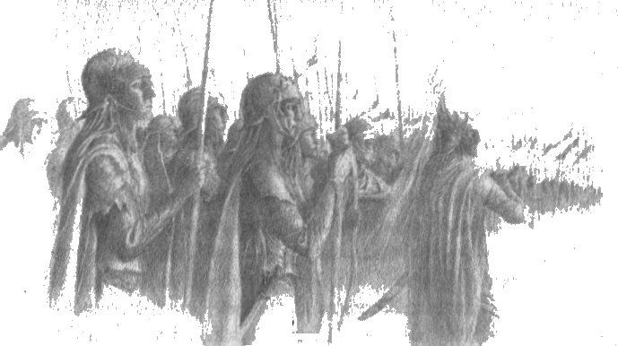

2
Fingon’un düştüğü ve Eldar’ın çiçeğinin solduğu Nirnaeth Arnoediad, yani Sayısız Gözyaşı Savaşı hakkında elfler arasında hâlâ pek çok şarkı söylenir, pek çok hikaye anlatılır. Şimdi her şey yeniden anlatılacak olsa, dinlemek için bir insan ömrü yetmez. Bu yüzden, burada yalnızca Hador Evi’nin ve Sadık Húrin’in kaderlerini etkileyen eylemler anlatılacaktır.
Sonunda toplayabildiğince güç toplamış olan Maedhros, bir gün, bir yaz ortası sabahı belirledi. O gün, doğan güneşi Eldar’ın boruları karşıladı ve doğuda Fëanor’un oğullarının sancağı açıldı; ve batıda Noldor Kralı Fingon’un sancağı açıldı.
Sonra Fingon, Eithel Sirion’un duvarlarının üzerinden baktı. Ordusu, Ered Wethrin’in doğusundaki vadilerde ve koruluklarda, düşmanın gözlerinden iyice saklanmış olarak sıralanmıştı; ama Fingon o ordunun büyük olduğunu biliyordu. Çünkü tüm Noldor Hithlumları orada toplanmıştı, Falas ve Nargothrond elflerinin büyük kısmı onlara katılmıştı; büyük bir insan gücü de vardı. Sağ tarafta Dor-lómin ordusu ve Húrin ile kardeşi Huor’un tüm yiğitliği konuşlanmıştı, kandaşları Brethilli Haldir orman insanlarının büyük kısmı ile birlikte onlara katılmıştı.
Sonra Fingon doğuya baktı ve eIf görüşü uzaklarda bir toz ve pus bulutunun içinde yıldız gibi çelik ışıltısı gördü ve Maedhros’un yola çıktığını anladı; ve sevindi. Sonra Thangorodrim’e doğru baktı. Thangorodrim’in çevresinde karanlık bir bulut vardı ve siyah bir duman yükseliyordu; Fingon, Morgoth’un gazabının uyandığını, meydan okumalarının kabul edileceğini anladı ve yüreğine kuşkunun gölgesi düştü. Ama o anda güneyden bir bağırış yükseldi, rüzgarın sırtında vadiden vadiye taşındı ve elfler ve insanlar hayret ve coşku içinde seslerini yükselttiler. Çünkü Turgon, çağrı olmamasına rağmen, beklenmedik bir biçimde Gondolin’in duvarlarını açmıştı ve parlak zincir zırhlarla kuşanmış, uzun kılıçları ve mızrakları orman gibi, on bin kişilik bir orduyla geliyordu. Sonra, Fingon uzaktan uzağa Turgon’un büyük borusunu duyduğunda gölge geçti ve yüreği hafifledi, ve yüksek sesle bağırdı: “Utúlie’n aurë! Aiya Eldalië ar Atanatarni, utúlie’n aurë! Gün geldi! Görün, Eldar halkı ve İnsanların Ataları, o gün geldi!” Ve onun gür sesinin tepelerde yankılandığını duyan herkes bağırarak yanıt verdi: “Auta i lómë! Gece geçiyor.”
Fazla zaman geçmeden büyük çatışma başladı. Çünkü Morgoth düşmanlarının yaptığı ve planladığı şeylerin çoğunu biliyordu, planlarını onların saldıracağı saate göre yapmıştı. Angband’dan çıkan büyük bir güç Hithlum’a yaklaşmaktaydı, bir başka, daha büyük bir tanesi, kralların güçlerini birleştirmesini engellemek üzere Maedhros’u karşılamaya gidiyordu. Ve Fingon’a karşı gelenlerin hepsi donuk renklere bürünmüş, çıplak çelik göstermiyorlardı, bu yüzden yaklaştıkları fark edildiğinde Anfauglith kumluklarında epey yol almışlardı bile.
Sonra Noldor’un yürekleri kızdı ve kumandanları düşmanlarına ovada saldırmak istedi; ama Fingon bu fikre karşı konuştu.
“Morgoth’un kurnazlığına karşı dikkatli olun, beyler!” dedi. “Gücü her zaman göründüğünden fazla, amacı açık ettiğinden farklı olmuştur. Kendi gücünüzü belli etmeyin, bırakın ilk önce düşman kendisininkini tepelere saldırarak harcasın.” Çünkü kralların planına göre Maedhros, elfler, insanlar ve cücelerden oluşan tüm gücüyle, açık açık Anfauglith’e yürüyecekti; ve umduğu gibi, karşılık olarak Morgoth’un ordularının esasını açığa çektiğinde, Fingon batıdan gelecekti, böylece Morgoth’un kudreti adeta çekiç ile örs arasına alınacak, paramparça edilecekti; ve bunun için işaret, Dorthonion’daki büyük işaret ateşinin yakılması olacaktı.
Ama Morgoth’un batıdaki kumandanına, bulabildiği herhangi bir yöntemle Fingon’u konuşlandığı tepelerden çekmesi emredilmişti. O nedenle, çatışma cephesini Sirion Irmağı’na, Barad Eithel duvarlarından Serech Bataklığı’na çekene kadar yürüyüşe devam etti; Fingon’un ileri karakolları düşmanlarının gözlerini görebiliyordu. Ama meydan okumasına yanıt alamadı, ve sessiz duvarlara ve tepelerin saklı tehdidine bakarken orkların sataşmaları kesildi.
Sonra, Morgoth’un kumandanı müzakere işaretleri ile birlikte biniciler gönderdi ve Barad Eithel’in tahkimatlarının duvarlarına yaklaştılar. Yanlarında, bir Nargothrond beyi olan Guilin’in, Bragollach’ta ele geçirdikleri ve kör ettikleri oğlu Gelmir’i getirmişlerdi; habercileri onu göstererek bağırdılar: “Evde bunun gibi çok var, ama onları bulmak istiyorsanız acele etmelisiniz. Çünkü geri döndüğümüzde hepsinin işini bu şekilde göreceğiz.” Ve Gelmir’in kollarını ve bacaklarını kesip, orada bıraktılar.
Talihsizlik eseri, o anda ileri karakolda Guilin’in oğlu Gwindor pek çok Nargothrondlu ile birlikte duruyordu; ve gerçekten de, kardeşinin yakalanması karşısında hissettiği acıyla, toplayabildiğince güçle savaşa yürümüştü. Bunun üzerine Gwindor’un gazabı alevlendi ve at sırtında, yanında pek çok binici ile birlikte öne atıldı, ve Angband’ın habercilerini kovaladılar ve onları öldürdüler; ve tüm Nargothrond halkı arkalarından gitti ve Angband saflarının derinlerine kadar ilerlediler. Ve bunu gören Noldor ordusu tutuştu, Fingon beyaz miğferini takarak borularını öttürdü ve ordusunun tamamı ani bir hücum ile tepelerden fırladı.
Noldor’un çektiği kılıçların ışıltısı bir sazlık yangını gibiydi; ve hücumları öylesine şiddetli ve hızlıydı ki, Morgoth’un planları neredeyse bozulacaktı. Batıya gönderdiği yem ordu takviye edilemeden süpürüldü ve yok edildi Fingon’un sancakları Anfauglith’i aştı ve Angband duvarlarının önünde dalgalandı.
Gwindor ve Nargothrond halkı savaşın cephesinde gidiyordu daima, şimdi bile dizginlenemediler; dış kapılardan fırtına gibi geçtiler ve nöbetçileri Angband’ın kendi avlularında katlettiler; ve onların kapılarını dövdüğünü duyan Morgoth derin tahtında titredi. Ama Gwindor orada tuzağa düşürüldü ve canlı yakalandı, adamları katledildi; çünkü Fingon onun yardımına koşamamıştı. Morgoth, Thangorodrim’deki pek çok gizli kapıdan, o ana kadar beklettiği ana kuvvetini salıverdi ve Fingon büyük kayıp vererek Angband duvarlarından püskürtüldü.
Sonra, savaşın dördüncü günü, Anfauglith Ovası’nda, hiçbir hikayenin anlatamayacağı keder, Nirnaeth Arnoediad başladı. Burada, doğudaki savaşta olan her şey: Ejderha Glaurung’un Belegost cüceleri tarafından bozguna uğratılması; Doğuluların ihaneti ve Maedhros ordusunun dağılması, Fëanor’un oğullarının kaçışı hakkında başka hiçbir şey anlatılmayacaktır. Batıda, Fingon’un ordusu kumların üzerinde çekildi ve Halmir oğlu Haldir ile Brethil insanlarının çoğu orada öldü. Ama beşinci gün, gece çökerken ve onlar hâlâ Ered Wethrin’den uzaktayken, Angband orduları Fingon’un ordusunu kuşattı ve gün doğana dek savaştılar, daha da yaklaştılar. Sabah umut geldi, çünkü asıl Gondolin ordusu ile yaklaşan Turgon’un boruları duyulmuştu; Turgon güneyde konuşlanmış, Sirion Geçidleri’ni koruyordu ve halkının büyük kısmını düşüncesizce hücum etmekten alıkoymuştu. Şimdi kardeşinin imdadına koşuyordu; ve Gondolin Noldor’u güçlüydü ve safları güneşte çelikten bir ırmak gibi parlıyordu, çünkü Turgon’un en düşük savaşçılarının kılıçları ve koşum takımları, insanlar arasındaki herhangi bir kralın fidyesinden daha değerliydi.
Sonra, Kral’ın muhafızlarının kalkanlı piyadeleri ork saflarını yardı ve Turgon kendine yol açarak kardeşinin yanına vardı. Turgon ile Fingon’un yanında duran Húrin’in buluşmasının, savaşın ortasında mutlu bir buluşma olduğu söylenir. Sonra bir süre için Angband orduları geri sürüldü ve Fingon çekilmeye başladı. Ama doğuda Maedhros’u püskürtmüş olan Morgoth’un oraya ayıracak büyük güçleri vardı şimdi, Fingon ile Turgon tepelere sığınamadan, onlara kalan güçlerin üç katı büyüklüğünde bir düşman dalgasının saldırısına uğradılar. Angband’ın yüksek kumandanı Gothmog gelmişti; ve o, elf orduları arasına karanlık bir kama sürdü, Kral Fingon’u kuşattı ve Turgon ile Húrin’i kenara, Serech Bataklığı’na doğru süpürdü. Sonra Fingon’a döndü. Haşin bir karşılaşma oldu. Sonunda, muhafızları çevresinde öldükten sonra Fingon yalnız kaldı ve bir balrog gelip, çelikten bir maşa ile onu yakalayana dek Gothmog ile savaştı. Bunun üzerine Gothmog kara baltası ile biçti onu ve yarılırken Fingon’un miğferinden beyaz bir alev fışkırdı. Noldor Kralı bu şekilde öldü; ve onu topuzları ile dövüp toza karıştırdılar ve gümüş-mavi sancağı kanının çamurunda çiğnediler.
Meydan kaybedilmişti; ama Húrin, Huor ve Hador Evi’nden kalanlar Gondolinli Turgon’un yanında sağlamca duruyorlardı; ve Morgoth’un orduları henüz Sirion Geçitlerini kazanamamışlardı. Sonra Húrin Turgon’a şöyle dedi: “Henüz zaman varken, beyim, hemen git! Çünkü sen Fingolfin Evi’nden geriye kalan son kişisin ve Eldar’ın son umudu sende yaşıyor. Gondolin ayakta kaldığı sürece, Morgoth’un yüreği yine de korku bilecek.”
“Artık Gondolin daha fazla gizli kalamaz ve keşfedildiğinde düşecektir,” dedi Turgon.
“Ama birazcık daha dayanırsa,” dedi Huor, “evinden elflerin ve insanların umudu çıkacaktır. Sana, ölümün gözleriyle bakarken, şunu söylüyorum beyim: şimdi sonsuza dek ayrılacak olsak da, beyaz duvarlarınızı bir da ha görmeyecek olsam da, senden ve benden yeni bir yıldız doğacak: Elveda!”
Yakında duran, Turgon’un kız kardeşinin oğlu Maeglin bu sözleri duydu ve unutmadı.
Sonra Turgon Húrin ve Huor’un tavsiyelerini aldı ve ordusunun Sirion Geçitlerine çekilmeye başlaması emrini verdi; ve kumandanları Ecthelion ve Glorfindel sağ ve sol kanatları korudu, ki düşmanından hiç kimse yanlarından geçmesin, çünkü o bölgedeki tek yol dardı ve gittikçe büyüyen Sirion Irmağı’nın batı kıyısının yakınında akıyordu. Ama Dor-lómin İnsanları, Húrin ile Huor’un istediği gibi, arkayı kolluyordu; çünkü gönüllerinde Kuzey topraklarından kaçmak yoktu; ve evlerini geri kazanamayacaklarsa, sonuna kadar orada direneceklerdi. Bu yüzden, savaşa savaşa güneye giden Turgon oldu ve sonunda arkadan Húrin ile Huor’un muhafızlarına yetişti, Sirion’dan geçerek kaçtı ve dağlarda kayboldu, Morgoth’un gözlerinden gizlendi. Ama iki kardeş, Hador Evi’nin güçlü insanlarından geriye kalanları topladılar ve Serech Bataklığı’nın arkasına gelene, Rivil Irmağı’na dayanana kadar adım adım çekildiler. Orada durdular ve daha fazla çekilmeyi reddettiler.
Bunun üzerine Angband’ın tüm orduları tepelerine bindi ve ölülerini dereye köprü ederek, Hithlum’dan kalanları, bir dalganın bir kayayı sarması gibi kuşattılar. Orada, güneş batıda alçalırken ve Ered Wethrin’in gölgeleri kararırken, Huor gözüne saplanan zehirli bir okla düştü ve Hador’un tüm yiğit insanları biçilerek çevresine yığıldılar; ve orklar onların başlarını keserek, günbatımında bir altın tümseği gibi yığdılar.
Húrin sonunda yalnız kalmıştı. Bunun üzerine kalkanını kenara fırlattı ve bir ork kumandanının baltasını kaparak iki elle kullandı; ve baltanın, Gothmog’u koruyan trollerin kara kanıyla tüttüğü ve sonunda eridiği, Húrin’in baltayı her savuruşunda yüksek sesle, “Aure entuluva! Gün yine gelecek!” diye bağırdığı söylenir şarkılarda. Bu şekilde yetmiş kez bağırmış; ama sonunda onu, bu şekilde ona ölümden daha beter kötülük etmeyi düşünen Morgothun emrine uyarak canlı yakalamışlar. Dolayısıyla orklar Húrin’i elleriyle yakaladılar ve Húrin kollarını kesse de eller ona asılı kalıyordu; ve sayıları devamlı yenileniyordu, öyle ki sonunda onların altında gömülü kaldı. Sonra Gothmog onu bağladı ve alay ederek, sürükleye surükleye Angband’a götürdü.
Güneş Deniz’in ötesinde batarken, Nirnaetlı Arnoediad bu şekilde sona erdi. Hithlum’a gece çöktü ve batıdan büyük bir fırtına geldi.
Kötücül amaçlarının tamamını henüz başaramamış olsa da, Morgoth’un zaferi büyüktü. Bir düşünce onu çok rahatsız ediyor, yarattığı huzursuzluk zaferini lekeliyordu: Turgon, tüm düşmanları arasında ele geçirmeyi ya da yok etmeyi en çok arzuladığı düşmanı, ağından kaçmıştı. Çünkü, büyük Fingolfin Evi’nden Turgon şimdi tüm Noldor’un Kralı’ydı; ve Morgoth Fingolfin Evi’nden korkuyor, nefret ediyordu, çünkü onlar Valinor’da ona tepeden bakmıştı ve düşmanı Ulmo’nun dostuydular; ve bir sebep de savaşta Fingolfin’in ona verdiği yaralardı. Morgoth en çok da Turgon’dan korkuyordu, çünkü onu eskiden Valinor’da görmüştü ve o ne zaman yaklaşsa, Morgoth’un ruhuna karanlık bir gölge düşmüş, belirsiz bir gelecekte bir zaman, yıkımının Turgon’dan geleceğini haber vermişti.